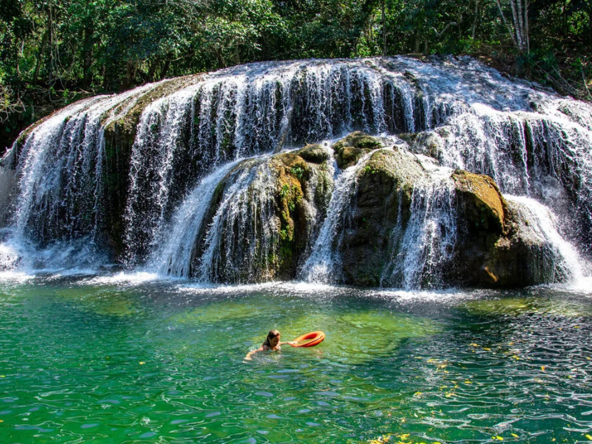

O estado de Mato Grosso está localizado na região Centro-Oeste e é um dos maiores do país em extensão territorial. Sua capital, Cuiabá, é um importante centro político e econômico. Mato Grosso se destaca pela forte produção agropecuária, sendo um dos principais produtores de soja, milho e algodão do Brasil. Além disso, abriga importantes biomas, como a Amazônia, o Cerrado e o Pantanal, o que garante uma grande diversidade ambiental e riqueza natural.

Voltar